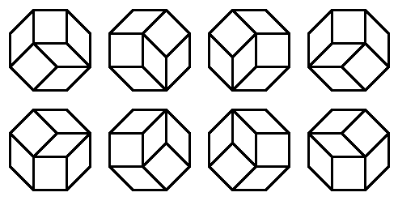
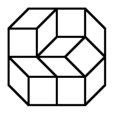

For a polygon $P$, let $t(P)$ be the number of ways in which $P$ can be tiled using rhombi and squares with edge length 1. Distinct rotations and reflections are counted as separate tilings.
For example, if $O$ is a regular octagon with edge length 1, then $t(O) = 8$. As it happens, all these 8 tilings are rotations of one another:

Let $O_{a,b}$ be the equal-angled convex octagon whose edges alternate in length between $a$ and $b$.
For example, here is $O_{2,1}$, with one of its tilings:

You are given that $t(O_{1,1})=8$, $t(O_{2,1})=76$ and $t(O_{3,2})=456572$.
Find $t(O_{4,2})$.
solve() → ?